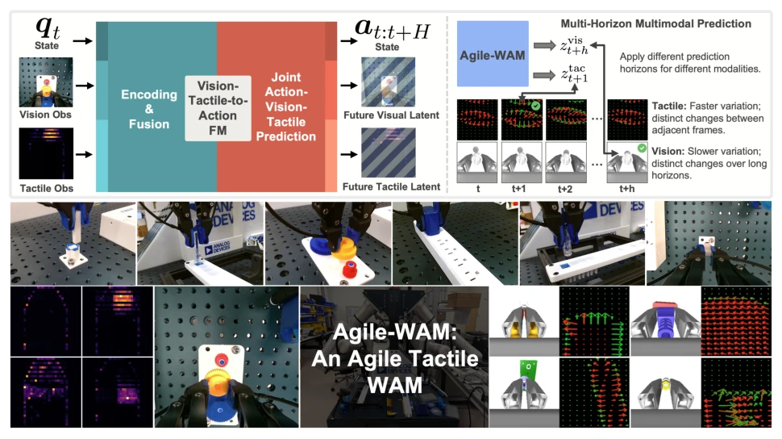
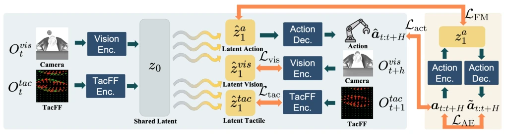
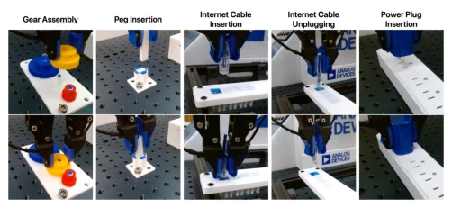
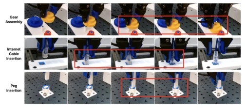
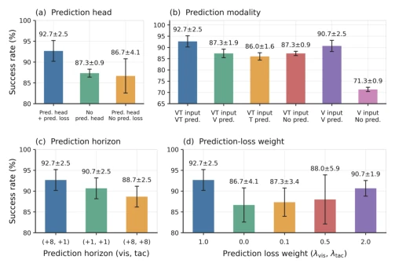

This paper performs a 'slimming surgery' on tactile World Action Models (WAM). Previous tactile WAMs often wrap large models, with inference as slow as a snail, making real-time control for robots difficult. Agile-WAM directly employs Flow Matching, compressing vision and tactile into a single latent, then mapping directly to actions, eliminating those flashy conditional injection mechanisms. However, can mixing tactile and vision for training truly learn physical dynamics? After all, tactile signals change rapidly while vision changes slowly, forcing them together easily leads to conflict. Fortunately, the authors devised a 'multi-time scale prediction', where vision looks further ahead and tactile looks closer, which counts as some clever ingenuity. Real-world testing success rate increased by nearly 30%, latency compressed to 12 milliseconds, this efficiency is indeed much superior to Diffusion Policy. But do not celebrate too early; although this model performs well in simulation, generalization on real hardware still depends on follow-ups, after all tactile sensor noise is significant, will the model overfit specific contact patterns? In short, it is a decent engineering attempt, but theoretical depth may not match those large model papers.
World Action Models (WAM) enable robots to learn physical dynamics by jointly predicting future states and actions, understanding 'physical laws' better than traditional policies [2], [3]. However, in contact-rich tasks, vision alone is insufficient, tactile can provide key information such as contact force and sliding [6], [7]. Existing tactile WAMs are mostly extended from large-scale pre-trained video generation models [8], [9]; although effective, inference overhead is substantial, memory consumption is high, difficult to deploy on resource-constrained robot platforms, let alone high-frequency control. This raises the core question: Can an agile tactile WAM be built without relying on large models? Existing methods like Tactile-WAM [9] introduce tactile but still rely on complex architectures. VITA [11] is efficient but lacks tactile. We need an architecture that can capture tactile dynamics while maintaining low latency to support fine manipulation.
The core of Agile-WAM is a lightweight Vision-Tactile-to-Action Flow Matching backbone network. The overall process is divided into three steps: first, encode visual images, tactile force fields (TacFF), and proprioceptive states into a shared latent z0, serving as the source distribution for Flow. Second, learn the velocity field through the Flow Matching network, directly mapping z0 to target latent z1, where z1 contains action latent, future visual latent, and future tactile latent. Unlike traditional Flow Policy starting from random noise, here observation latent is used directly as the starting point, eliminating the conditional injection module, significantly reducing computational load. The most critical innovation is 'multi-time scale multi-modal prediction'. The authors found visual changes are smooth, tactile changes are drastic. Therefore, visual prediction uses a long horizon (matching action length), tactile prediction uses a short horizon (next frame). This avoids visual adjacent frame redundancy while capturing tactile fine contact dynamics. Training objectives include Flow Matching Loss, Action Reconstruction Loss, and Visual/Tactile Latent Space Prediction Loss, optimized end-to-end.
Experiments were conducted on 9 simulation tasks (ManiFeel benchmark) and 5 real-world tasks (Flexiv Rizon 4). Baselines include Diffusion Policy (DP), VITA, Tactile-WAM, etc. Metrics are mainly Success Rate and Inference Latency. In simulation results, Agile-WAM outperforms VITA-VT and Tactile-WAM on most tasks, especially in tasks requiring fine alignment (such as Peg Insertion) where the advantage is obvious. In real experiments, Agile-WAM overall success rate increased relatively by 29.4%, inference latency only 11.9ms, control frequency up to 96Hz, far exceeding DP series (~2Hz). Ablation studies show that joint action-future modeling is more important than simply increasing latent capacity, and multi-time scale prediction is superior to unified horizon. This indicates that the dynamic characteristic differences between tactile and vision indeed require differentiated processing.
其他图片Other Figures

Fig. 1: Agile-WAM, a tactile World Action Model, takes multi-modal inputs (including visual and tactile observations) and performs joint action–vision–tactile prediction through a direct vision-tactile-to-action flow-matching (FM) backbone. To provide effective supervision for future latent prediction, Agile-WAM introduces multi-horizon multimodal prediction to enable joint prediction of visual and tactile latent over different horizons. By capturing the distinct temporal dynamics of the two modalities, Agile-WAM aligns physical dynamics modeling better with action generation and enables more precise, fine-grained manipulation.

Fig. 2: Overview of Agile-WAM. Agile-WAM encodes visual, tactile, and proprioceptive observations into a shared latent that serves as the source of a lightweight vision-tactile-to-action flow-matching backbone. The flow jointly generates latent representations of the action chunk and future visual and tactile observations. An action autoencoder provides a structured action latent space, while multi-horizon multimodal prediction uses a longer horizon for vision and a short horizon for tactile feedback to capture their distinct temporal dynamics. The model is trained end-to-end with flow-matching, action reconstruction and generation, and visual/tactile latent prediction losses.

Fig. 3: Real-world experiments include five challenging tasks: Gear Assembly, Peg Insertion, Internet Cable Insertion, Internet Cable Unplugging, and Power Plug Insertion.

Fig. 4: Agile-WAM effectively learns corrective behaviors in real-world experiments. When the initial attempt fails to align the object with the target position, Agile-WAM can still recover under an obstructed visual view by gently maintain- ing contact with the surrounding surface and using tactile feedback to search for the correct insertion position. This recovery capability substantially improves the success rate over baselines, which often fail to correct the misalignment.

Fig. 5: Ablation studies of Agile-WAM. (a) Joint action– future modeling improves performance beyond the gain from increased latent capacity. (b) Jointly modeling both future visual and tactile observations provides the strongest perfor- mance under multimodal input. (c) Multi-horizon multimodal prediction better matches the different temporal character- istics of vision and tactile signals. (d) We vary the visual and tactile prediction loss weights to explore their respective influence on policy performance.